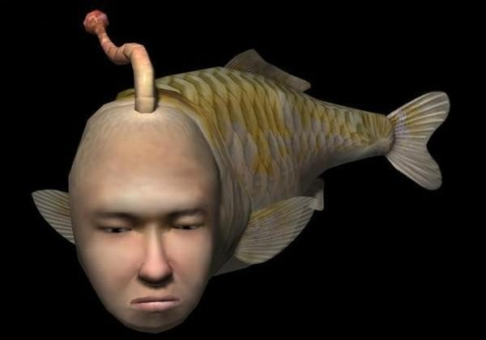
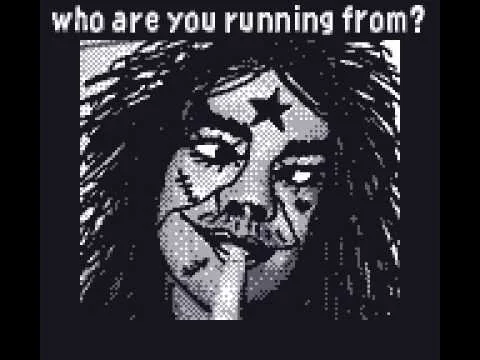
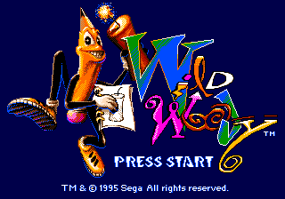

seaman
seaman is a virtual pet game on the dreamcast.
off the bat:
- the name
- the fact that it's a fish with a face
- it looks weird
in this game, you spend your time talking to a human-fish
hybrid via microphone, that has a very snarky personality. the microphone isnt
isn't all that good but if the microphone works, the seaman surprisingly responds.
the creature throughout the game evolves into weird strange forms based on its age.
this might be the strangest one on the list honestly.
ena: dream bbq

this is an exploration game that has a strange cast of characters.
the world is very strange, everyone almost looks like they're in their own art style.
and with that, comes different personalities. i don't think there's much of a dull moment
in this game.
gameboy camera
this accessory came with a minigame, where you can take pictures
with the accessory. from there, you'll play through a small collection of minigames.
the experience is short-lived, but the team behind this game had some strange ideas for
the game. the most memorable thing about this game would be the popular
"who are you running from?" images.
wild woody
a pencil that screams a lot. this is wild woody.